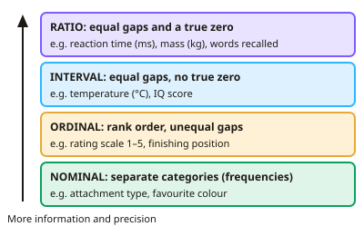

A-level Psychology Year 12 · Topic 5
Research methods: data handling and analysis
This topic is about what to do with data once a study has been carried out.
We will cover types and levels of data, averages and spread, graphs and distributions, then probability, significance and errors.
Finally we will choose and use inferential tests, including the sign test, and practise the maths skills that appear in every exam.
- 8 subtopics
- 533 questions
- Free: 5.1 notes and 10 questions
In this topic
- 5.1Quantitative and qualitative data and levels of measurementFree below · 76 questions
- 5.2Descriptive statistics: measures of central tendency and dispersionOpen in Full Marks · 59 questions
- 5.3Presenting data: tables, bar charts, histograms, scattergrams and distributionsOpen in Full Marks · 64 questions
- 5.4Probability, significance levels and Type I and Type II errorsOpen in Full Marks · 65 questions
- 5.5Choosing an inferential test and using critical values tablesOpen in Full Marks · 73 questions
- 5.6The sign test: calculation and interpretationOpen in Full Marks · 63 questions
- 5.7Other inferential tests: Wilcoxon, Mann-Whitney, Spearman, Pearson, chi-square and t-testsOpen in Full Marks · 73 questions
- 5.8Maths skills for psychology: ratios, percentages, decimals, standard form, significant figures and estimationOpen in Full Marks · 60 questions
5.1 · Free notes
Quantitative and qualitative data and levels of measurement

Key points
- Quantitative data are numerical (counts, scores, times) and can be analysed statistically. Qualitative data are descriptive and expressed in words, meanings or themes, e.g. interview transcripts, open-question answers and case study notes.
- Quantitative data are objective, easy to analyse and easy to compare using graphs and statistical tests. They can oversimplify behaviour and lose meaning, so they may have lower validity.
- Qualitative data give rich, detailed insight into participants' views, which gives high validity. They are open to subjective interpretation by the researcher, are harder to analyse and compare, and are less reliable.
- Qualitative data can be turned into quantitative data by content analysis or thematic analysis. Researchers code the data into categories and count the frequency of each one.
- Primary data are collected first-hand by the researcher for their own aim, e.g. an experiment or questionnaire. Secondary data already exist, e.g. government statistics, previous studies or meta-analysis. Either kind can be quantitative or qualitative.
- The level of measurement decides which descriptive statistics, graphs and inferential tests are appropriate. Know all the levels, with an example for each.
- Nominal data are separate categories with no order, e.g. attachment type or favourite colour. Only frequency counts are possible, so the mode is the only average.
- Ordinal data can be put in rank order, but the gaps between points are unequal or unknown, e.g. a 1–5 rating scale or finishing position. Use the median and range, not the mean.
- Interval data are measured in equal units with no true zero, e.g. temperature in °C or IQ score. Ratio data are interval data with a true zero, so ratios are meaningful, e.g. reaction time in ms or mass in kg. AQA only requires nominal, ordinal and interval.
- Higher levels can be reduced to lower ones (ratio to ordinal to nominal), but never the reverse. Psychological scales such as Likert scales are strictly ordinal, because the gaps may not be equal.
- Exam tip: counting how many participants fall into each category gives quantitative data at the nominal level, even though the categories themselves are not numbers.
In more detail
- Worked classification: reaction time in milliseconds = ratio (true zero); IQ score = interval (equal units, no true zero); a 1–10 mood rating = ordinal; favourite colour = nominal.
- Why ratings are ordinal: the gap between 'quite happy' (4) and 'very happy' (5) may not mean the same to everyone as the gap between 1 and 2, so the points are not truly equal units.
- Which average: nominal → mode; ordinal → median; interval or ratio → mean, unless there are extreme scores, when the median is better.
- Words into numbers: in a content analysis of diary entries, coding and tallying each mention of 'stress' turns qualitative data into quantitative data, but some meaning and context is lost.
- Exam tip: subjective and objective are not the same as qualitative and quantitative. A rating scale is quantitative but still based on a subjective judgement.
Practice
Quantitative and qualitative data and levels of measurement: 10 questions
Pick an answer to check it, or open the answer for the explanation.
1. Children are classified as 'secure', 'insecure-avoidant' or 'insecure-resistant' attachment. At which level of measurement are these data?
- Interval
- Ordinal
- Nominal
- Ratio
Show answer
C: Nominal. The categories are separate labels with no order or numerical value, so the data are nominal.
2. Ten students are placed 1st to 10th for popularity, with no information about how much more popular each is. Which level of measurement is this?
- Ordinal
- Ratio
- Nominal
- Interval
Show answer
A: Ordinal. Ranks show order only. The gaps between ranks are unknown and may be unequal, so the data are ordinal.
3. Why is temperature in °C classed as interval data rather than ratio data?
- It is made up of separate categories
- The units are not equal in size
- It has equal intervals but no true zero
- It can only be put in rank order
Show answer
C: It has equal intervals but no true zero. 0°C does not mean 'no temperature', so there is no true zero. 20°C is not twice as hot as 10°C. The intervals between degrees are equal.
4. Which is a strength of qualitative data compared with quantitative data?
- They give richer, more detailed insight, increasing validity
- They are easier to analyse statistically
- They are less open to researcher bias
- They are quicker to compare between groups
Show answer
A: They give richer, more detailed insight, increasing validity. Qualitative data capture meaning and depth, which gives high validity. They are harder to analyse and more subjective than numerical data.
5. Which is a recognised weakness of quantitative data?
- They can oversimplify behaviour and lose meaning
- They are open to interpretation by the researcher
- They cannot be analysed using statistical tests
- They cannot be shown in graphs
Show answer
A: They can oversimplify behaviour and lose meaning. Reducing behaviour to numbers may lose meaning and context, which lowers validity. Quantitative data are objective and can be graphed and tested.
6. A researcher uses government figures on divorce rates from 2010 to 2020 in her study. What type of data are these?
- Primary, qualitative
- Primary, quantitative
- Secondary, qualitative
- Secondary, quantitative
Show answer
D: Secondary, quantitative. The figures were collected by someone else, so they are secondary data. Divorce rates are numerical, so they are quantitative.
7. A researcher reads interview transcripts and counts how often 'anxiety' is mentioned. What has she converted the data into?
- Quantitative data, nominal frequencies, via content analysis
- Interval data using a Likert scale
- Primary data at the ordinal level
- Qualitative data using a case study
Show answer
A: Quantitative data, nominal frequencies, via content analysis. Content analysis codes words into categories and counts them. The frequency in each category gives quantitative data at the nominal level.
8. Participants rate their stress from 1 (low) to 5 (high). Why is this strictly ordinal data?
- The gap between each point may not be equal
- The scale has a true zero
- It is measured in standard units
- It consists of separate categories
Show answer
A: The gap between each point may not be equal. Participants may not treat the gap from 1 to 2 as the same size as the gap from 4 to 5. The scores can be ranked but the intervals are not known to be equal.
9. Which statement about levels of measurement is correct?
- Ratio data can be reduced to ordinal or nominal data, but not the reverse
- Interval data are always categories
- Nominal data can be converted to interval data
- Ordinal data have a true zero
Show answer
A: Ratio data can be reduced to ordinal or nominal data, but not the reverse. Higher levels contain all the information of lower ones. You can rank ratio scores (ordinal) or group them (nominal), but you cannot recover precise values from ranks.
10. A study records each participant's IQ score. Which level of measurement is this?
- Categorical
- Interval
- Ordinal
- Nominal
Show answer
B: Interval. IQ scores have equal intervals but no true zero, since an IQ of 0 does not mean no intelligence. They are therefore interval data.
Keep going in Full Marks
Full Marks has 76 questions on Quantitative and qualitative data and levels of measurement (66 more than here), set out in practice levels. You also get notes and 3D models for all 8 subtopics of Research methods: data handling and analysis, plus games, timed exams and past papers.